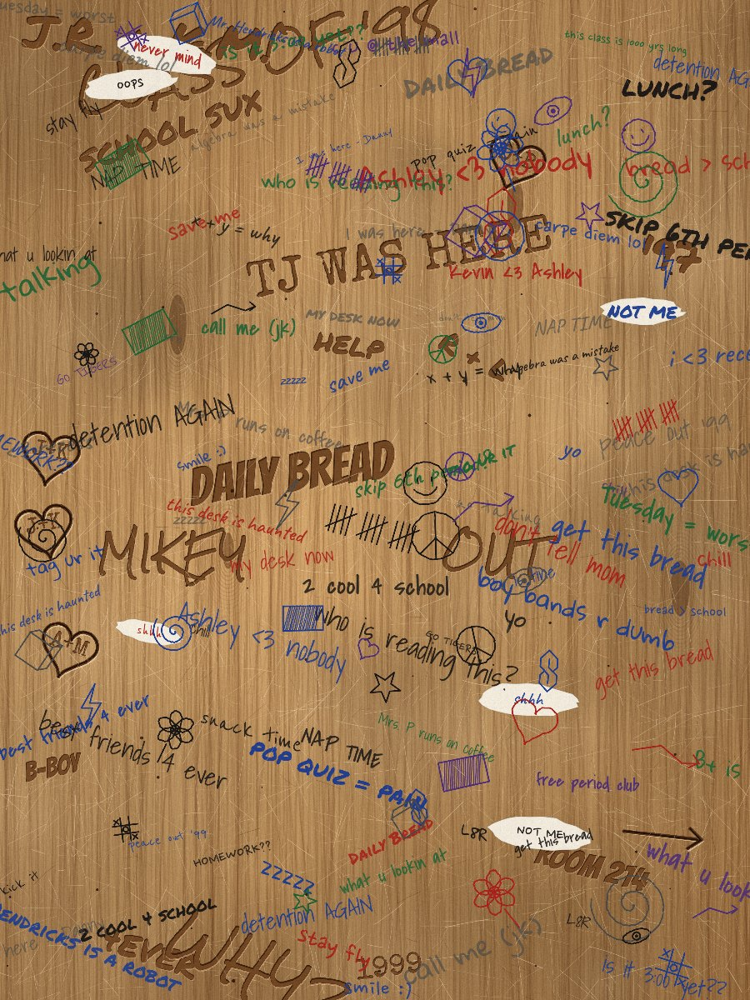
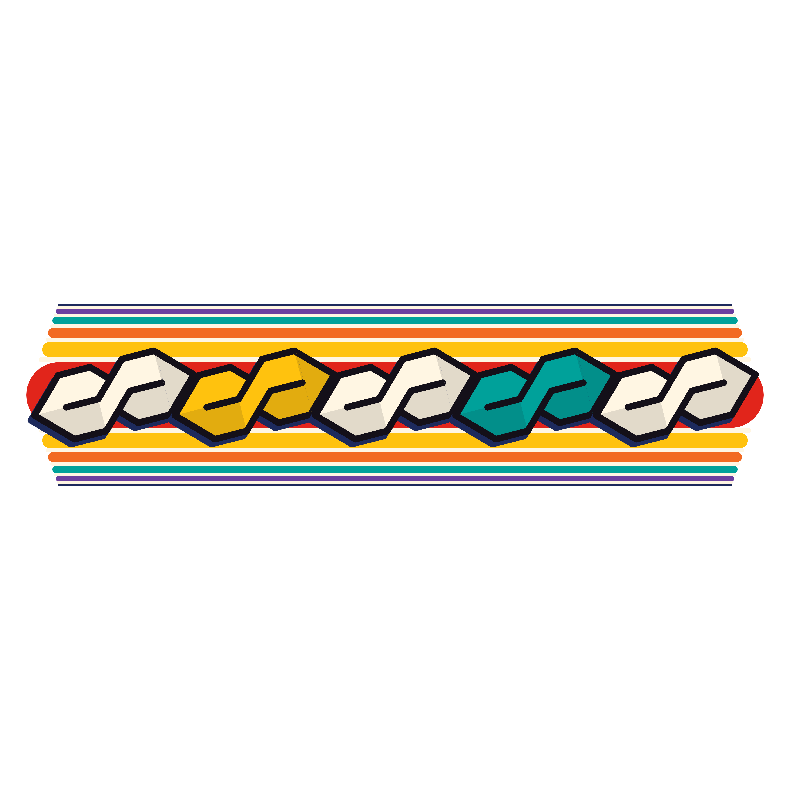

Daily Bread · tee concepts · side project
Two graphic tees, separate from the logo work: an all-over print where the whole shirt is a beat-up school desk, and a chest print that crosses the 90s Cool S notebook doodle with soda-can racing stripes.
No desk outline. The shirt itself is the desktop: worn wood grain, scuffed varnish, carved initials and dates, ballpoint in blue, black, red, green and purple, faded pencil, white-out patches, and every doodle you made in 1997 (Cool S, cube, tic-tac-toe, tally marks, peace sign, smileys). "Daily Bread" is carved into it in a couple of spots.

The Cool S everyone drew in the back of their notebook, turned on its side and hooked tip to tip like chain links, over horizontal can stripes in cherry red, sun yellow, orange, teal and grape, with thin cream pinstripes between. Thick marker outlines and a hard navy drop shadow keep the doodle feel.
